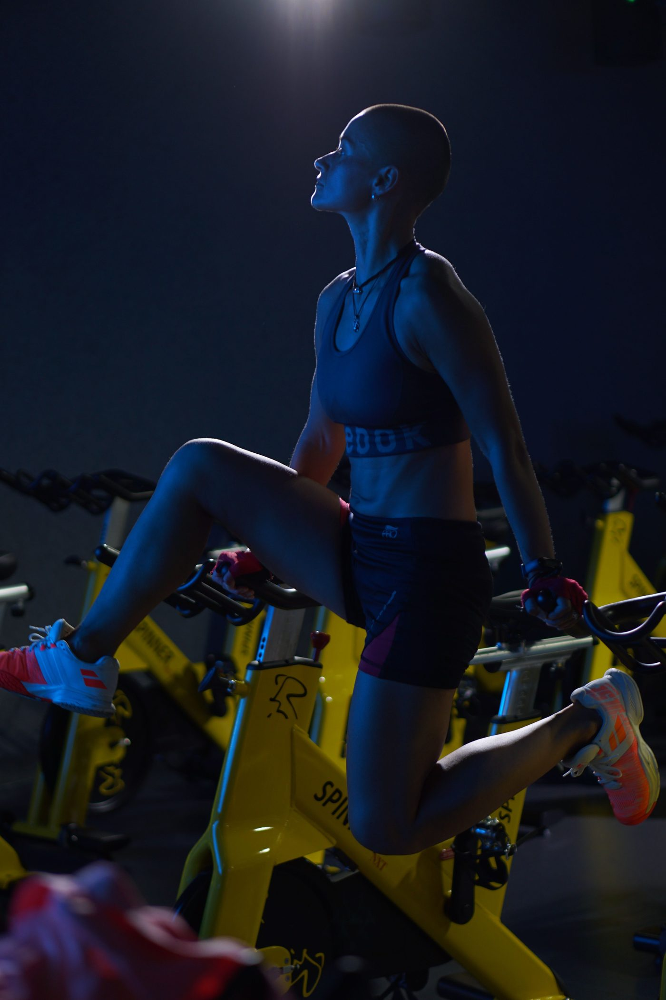
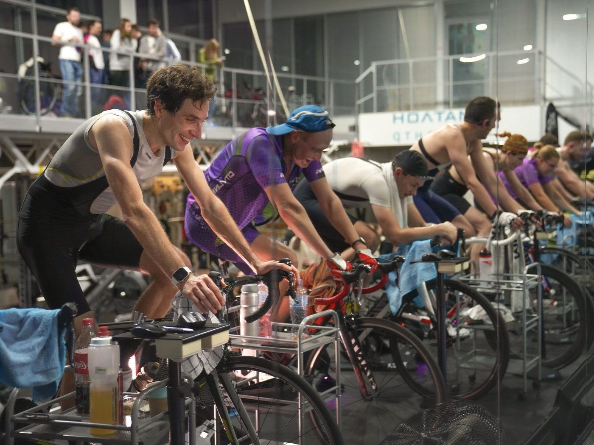
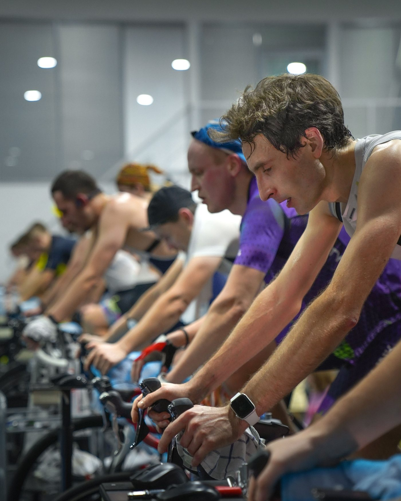

A boutique indoor cycling studio
Cycology Studio offers choreographed rhythm rides, Live DJ Ride sessions, monthly Karma Rides for charity, and small group strength classes, in a club-like dim-lit studio. Drop-in is $20 including shoes and towel, with unlimited monthly memberships from $72.
Cycology Studio sits at 117 E Bijou St in Colorado Springs. The boutique studio offers choreographed rhythm rides, Live DJ Ride sessions, monthly Karma Rides for charity, and small group strength classes, in a club-like dim-lit studio.


117 E Bijou St, Colorado Springs, CO 80903
Monday to Thursday, 5:30 AM to 7:00 PM